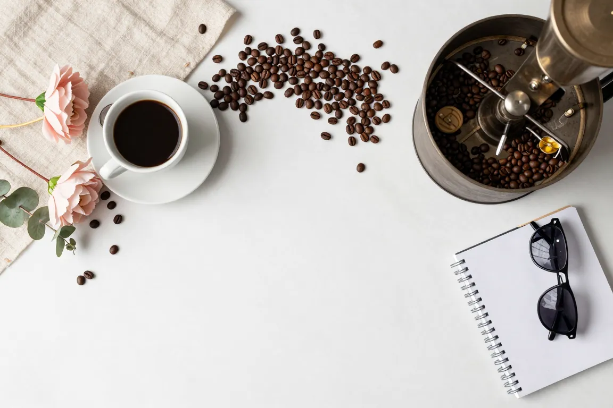

Gjenstander lagt på en flat flate og tatt rett ovenfra: kaffe, en notatbok, blomster, en telefon. Marmor eller lin fyller bunnen, lyset er mykt, og rekvisitter ligger i ryddige grupper med tomt rom.

Kjerneidé
Et liv lagt flatt på et bord: velg gjenstander, legg dem i orden og ta bildet rett ned slik at historien leses som et diagram.
Designprinsipper
Ta bildet i 90° rett ovenfra og fyll det kvadratiske utsnittet med én flate.
Bruk en lys bunn: hvit marmor (#F6F5F2), lys eik eller lin, lyst opp av et vindu i 45° fra siden.
Grupper 5 til 9 gjenstander i oddetall og hold 30 % til 40 % av utsnittet tomt.
Gjenta 1 aksentfarge, som rødme (#D9A7A0) eller eukalyptus (#7C9A8A), i 3 rekvisitter.
Rett opp gjenstander mot kanten av utsnittet eller i 90° og 45°, og hold 8 % til 12 % av utsnittet som marg.
Plasser hovedgjenstanden på en tredjedel av utsnittet og legg til en hånd eller en kopp som målestokk.
Legg til en kort bildetekst med små bokstaver på 14px og en rad med 10 til 20 emneknagger under bildet.
Antimønstre
Bilder fra en skrå vinkel
Mørke, rotete bord
Jevn, sentrert, symmetrisk avstand uten et brennpunkt